SILAC data
For the here shown use case Perseus 1.5.1.6 was used.
1 Dataset
The SILAC data for the here shown example was published in 2010 by Geiger et. al.1.
The dataset consists of three breast cancer cell lines measured in triplicates. Each sample was separated into 12 OFFGEL fractions. This resulted in 108 two-hour LC-MS runs. The samples were measured with SILAC as an external standard. The light state (Lys-0/Arg-0) is the respective sample, while the heavy state (Lys-8/Arg-10) is always the same mixture for all cell lines.
2 Data preparation
2.1 Loading
Load the file “proteinGroups.txt” from the “combined/txt” folder of the MaxQuant output. Load → Generic matrix upload is denoted by the green arrow on the top left corner of the Perseus window or load the file using the drag and drop function of Perseus.

Make sure you select the 9 “Ratio H/L Normalized …” columns as main columns. Also make sure you understand what is meant by the column types “Main”, “Categorical”, “Numerical”, “Multi-numerical” and “Text”.
Comment: After each applied operation a new matrix will be generated. Every matrix that you are creating can be saved with Export → Generic matrix export and re-imported later with Load → Generic matrix upload.
2.2 Filtering
After loading the matrix, we filter out the reverse proteins and the proteins that are only identified by site. This is done by using the function Processing → Filter rows → Filter rows based on categorical column, because both the “Reverse” column and the “Only identified by site” column are categorical.
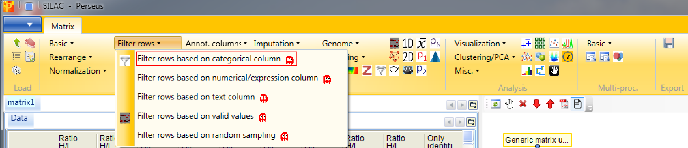
First, we filter out the reverse hits. Reverse hits are indicated by a “+” in the “Reverse” column, so to filter out these hits all rows containing a “+” will be removed from the matrix. Therefore, the column “Reverse” needs to be selected, “+” is the value we are looking for and is selected by default. No further changes need to be applied, because we want to remove the matching rows from the matrix. This results in a matrix, where the value in the “Reverse” column of all rows is empty.

Second, we filter out the hits that are only identified by site. The column “Only identified by site” has two values, TRUE and FALSE. Thus all rows containing TRUE are filtered out. Therefore, “Only identified by site” has to be selected as column and TRUE is the value of interest, which is selected by clicking on TRUE on the left hand side and using the button in the middle with the arrow to the right on it. Deselection works by using the button with the arrow to the left. No further changes are necessary, because we want to remove the matching rows from the matrix. This results in a matrix, where all rows contain the value FALSE in the column “Only identified by site”.

The next step is to filter out all rows with less than six valid intensity values of all nine (i.e. being not NaN). Therefore we use Processing → Filter rows → Filter rows based on valid values.
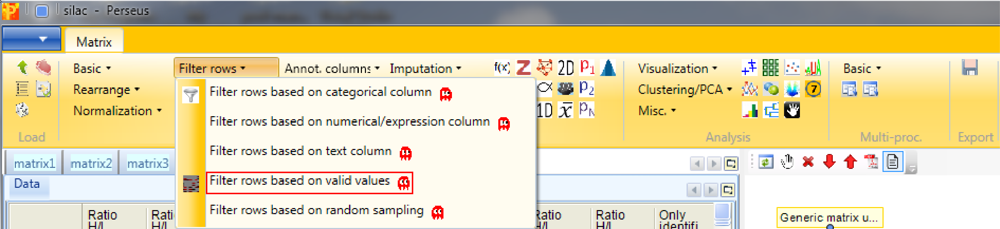
The required percentage of valid values per row may differ from study to study. In some cases, having valid values only in one of several replicate groups might be a significant finding and these kind of rows should possibly not be discarded. The filter can also be applied to each column group separately. (How to create column groups or categorical annotation rows you will learn in a few steps.) Now we just want to be certain that each row contains at least six of the nine intensity values.

2.3 Ratio transformation
Because the actual sample is in the light SILAC channel and the reference is in the heavy channel, we need to invert the ratios using Processing → Basic → Transform.
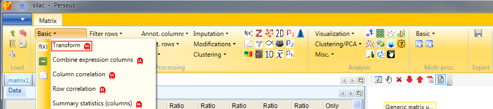
To invert the ratios the formula \(1/x\) has to be typed in the transformation type field. No further changes are necessary, because we want to apply the transformation to all main columns, which are selected by default.

Then the ratios will be logarithmized by using the function Processing → Basic → Transform again.

Now the transformation function we are going to use is \(log_2(x)\), which is the default setting. The transformation should also be applied to all main columns, which are selected by default.

2.4 Renaming columns
The main column names “Ratio H/L Normalized …” are a bit bulky. So we rename the main columns with the help of regular expressions and the function Processing → Rearrange → Rename columns [Reg.ex.].
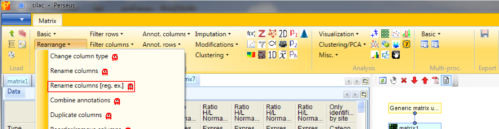
The regular expression that you may use to remove the repetitive part of the name is “Ratio H/L Normalized (.*)”. The general concept of regular expressions can be found under http://en.wikipedia.org/wiki/Regular_expression. If you already know generally how regular expressions work, you may only need to glance at this Quick Reference or at an even quicker Cheat Sheet.
This results in a matrix, where the column names of the ratios are a combination of the cell line and the replica.

If you want to rename the columns manually without the help of regular expressions you can use Processing → Rearrange → Rename columns.
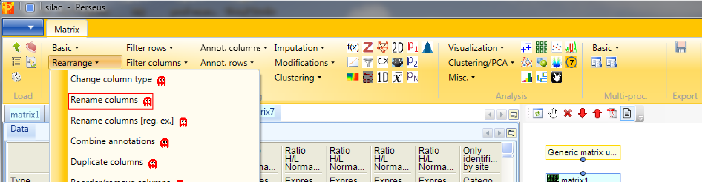
Then you can type the new names in the predefined text field.

3 Add annotation
In Processing → Annot.columns → Add annotation are several options for adding annotations to your data. You can select from any annotation file that is present in the “Perseus/conf/annotations/” folder.

The standard way of obtaining the latest main annotation, containing: GO, KEGG, Pfam, GSEA, Keywords, CORUM and many other terms found in UniProt is by downloading the mainPerseusAnnot.txt.gz file from dropbox. This is an easy four step process:
- Click on the blue box with the white arrow on the top left corner of the Preseus window
- Select “Annotation download” and a pop-up window containing the dropbox link will appear
- Click on the dropbox link and download the mainPerseusAnnot.txt.gz file of your choice
- Put the downloaded file in the “Perseus/conf/annotations/” folder
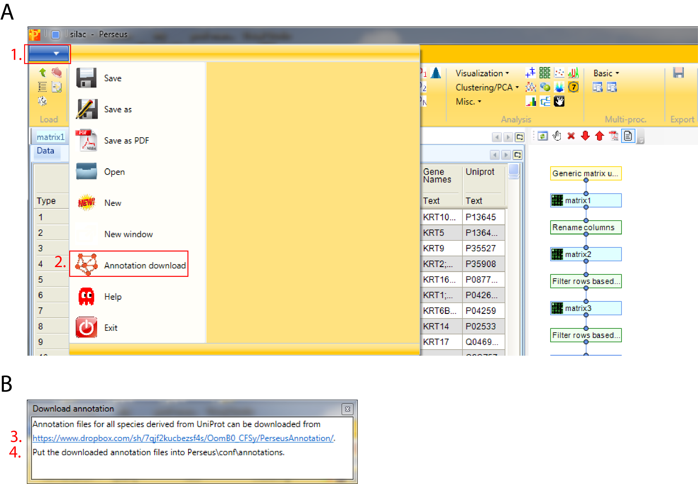
Since the dataset consists of three human breast cancer cell lines we have to download and use “mainAnnot.homo_sapiens.txt.gz” as “Source”. The mapping is always based on UniProt identifiers, therefore we have to specify which column contains the UniProt identifiers that should be used for mapping the annotation (parameter “Uniprot column”). Then we can select, which annotations should be added to the matrix. Here we select “GOBP name”, “GOMF name”, “GOCC name” and “KEGG name” by clicking on them on the left hand side and using the button in the middle with the arrow to the right.

Now the matrix is filtered, transformed and everything is added that we want, so we can examine the data by using different visualization tools.
4 Scatter plot
Now we plot some replicates against each other. Therefore open a scatter plot with Analysis → Visualization → Scatter plot.

Then we plot different replicas against each other. For that we have to select “Columns” as “Matrix access”, which means that scatter plots between the columns will be calculated. This results in an extra tab on the same matrix containing the scatter plot functionalities.

Make sure you plot replicas of the same cell line against each other. The “Data” tab of the “Scatter plot” tab contains three different possibilities to explore the data in more detail defined by the tabs. Each of the three tabs has their own buttons, where the functionality of each button can be obtained from their tooltips:
- Points contains the data points/proteins. Here selected proteins can be highlighted in the scatter plot by changing their color, shape or size.
- Categories contains the categories of the proteins e.g. the different annotation categories added in the previous step. Here selected categories can be highlighted in the scatter plot by changing their color, shape or size.
- Correlations contains a list of correlation coefficients that can be calculated up on request.

5 Density scatter plot
When there are many data points in a scatter plot it is often difficult to see where the majority of points are located. This situation can be improved by coloring the data points by the local point density. Estimate the density for two columns with Processing → Basic → Density estimation.
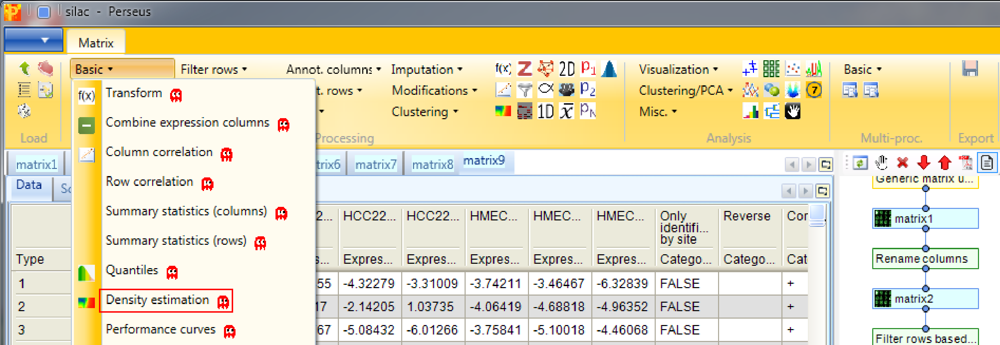
Decide for two columns that you want to plot. No further changes are necessary. This results in an additional column containing the density estimate.

Now open a scatter plot,

plot columns against each other,

and color the data points by the density that you just created. There are two options, either choose “Density_…” or “Excluded fraction_…” as color (highlighted by red rectangle). Data points with the highest density are light blue and data points with the lowest density are bright green (default). The color gradient can be changed in the scatter plot tab by clicking the button highlighted by a blue rectangle.

6 Multi scatter plot
Open a multi scatter plot using Analysis → Visualization → Multi scatter plot.

We want to plot all samples against each other. So no further changes are necessary, because all main columns are selected by default. The results will be displayed in an extra tab on the same matrix containing the multi scatter plot functionalities.

Now to figure out, which of the samples have the best correlation we want to calculate the Pearson correlation (red rectangle) for every scatter plot. The results are written in blue on the left top corner of each scatter plot. Thus we can easily figure out, which cell lines are more similar to each other. Also other correlation coefficients can be calculated. All of these calculations will be saved in a matrix, which you can find in the “Plots” tab in the top right window of the “Multi scatter pot” tab. As before in the scatter plot also here you can change the point size/color of individual selected data points or of categories. To explore a specific scatter plot in more detail you can click on it and see it enlarged in the bottom right corner of Multi scatter plot tab (green rectangle).
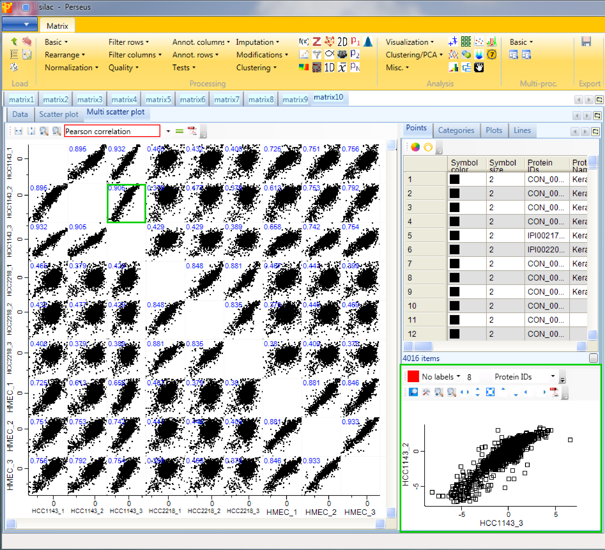
7 Histogram
Open a histogram using Analysis → Visualization → Histogram.

The log ratios of each sample are separately represented as histograms. Therefore, nothing needs to be changed in the parameters, because all main columns (samples) are selected by default. The results will be displayed in an extra tab on the same matrix containing the histogram functionalities.

Here one can get an impression, if the overall ratio distributions are similar for all samples or if the distribution is peculiar in any way (e.g. bimodal). Histograms of sub-categories can be displayed by selecting one row (category) in the “Categories” table on the right side. Here the sub-category “amine metabolic process” is highlighted in orange, but also individual points can be selected in the “Points” table to see where they are located in all histograms.

If we switch to logarithmic fillings (button highlighted by the red rectangle) we are able to see the selected points better.

In case the distributions are shifted towards left/right and the peak is not on zero, we have to normalize the values. For instance try normalizing the data by subtracting the median from each distribution with Processing → Normalization → Subtract and check what changed by looking at the resulting histograms.
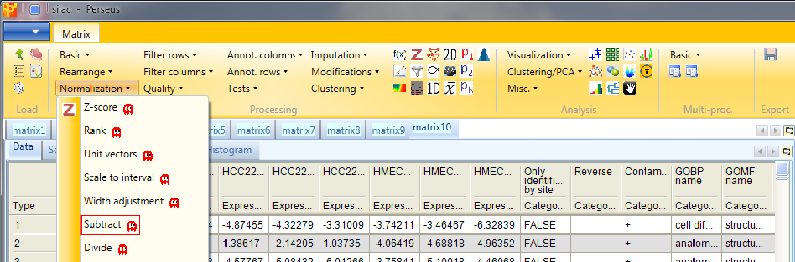
Set the parameter “Matrix access” to “Columns”.

Afterwards open another histogram.

8 Profile plot
Open a profile plot with Analysis → Visualization → Profile plot. The function has no parameters and the results will be displayed in an extra tab on the same matrix containing the profile plot functionalities.

Again you have tables with individual data points and categories where you can manipulate the properties of the lines. In addition there is the “Reference profile” tab. Here you can define what would be the shape of an expression profile of interest manually by shifting the profile points (red) up/down. Then you can retrieve those proteins (default: 10) whose expression profiles have the highest similarity or correlation to the reference profile by clicking on the “Select neighbours” button on upper left corner of the “Reference profile” tab (highlighted by the red rectangle).
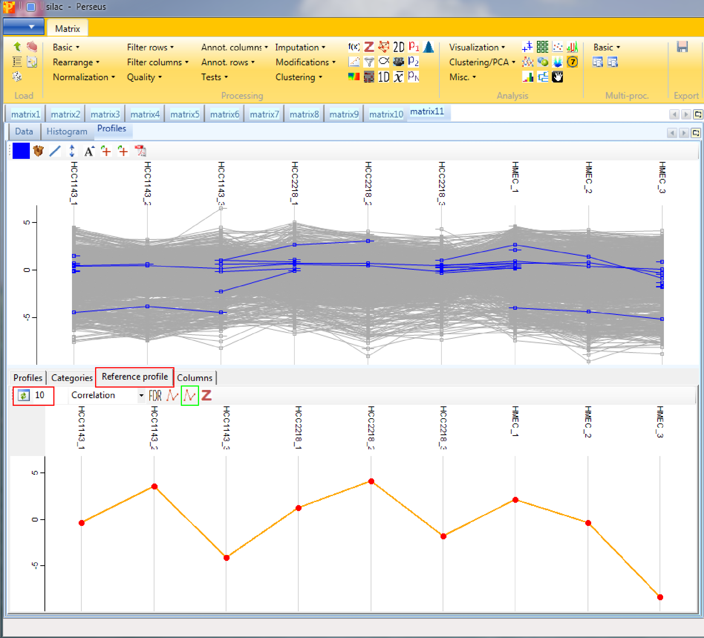
Also the profiles of particular proteins can be retrieved using the “Profiles” tab and highlighting the proteins of interest. Different coloring is also possible. To create the average expression profile of the selected proteins, go to the “Reference profile” tab and click the “Average selected profiles” button (button highlighted by a green rectangle in the screenshot above).

Or retrieve the average expression profile of a group of proteins (e.g. of a GO term) in the “Categories” tab. First highlight the categories of interest, then go to the “Reference profile” tab and click the “Average selected profiles” button (button highlighted by a green rectangle in the screenshot of the “Reference profile” tab).

One can also input the values of the reference profile as numbers in the “Columns” tab. If you switch then back to the “Reference profile” tab, the displayed profile already contains the defined values.
Once you have found an interesting selection of proteins it can be exported (e.g. for enrichment analysis) with the “Export selection” button marked with a plus sign.
9 3D scatter plot
Open a 3D scatter plot with Analysis → Visualization → 3D plot. The function has no parameters and the results will be displayed in an extra tab on the same matrix containing the 3D scatter plot functionalities.

This is similar to the conventional scatter plot, just that you can plot three columns against each other. Also here one can color points, either directly, by categories or by another numerical column, which can result in quite appealing plots. If nothing happens you might have to hit the “Refresh” button in the upper left corner of the “3D plot” tab (highlighted by a red rectangle).
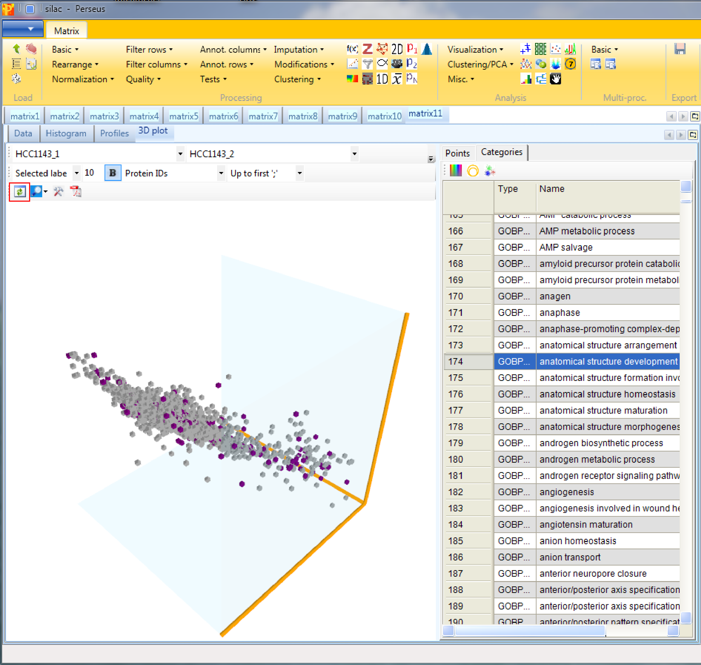
10 Grouping of samples
Now we want to find out which proteins are differentially regulated between the cell lines. For this we have to define the grouping of samples into replicate groups. Go to Processing → Annot.rows → Categorical annotation rows.

Create three groups according to the replicates. The categorical column is named “Cell line” and the groups have the names of the cell lines, which are defined manually.

In case you have more samples another opportunity is to use the Action “Create from experiment name”, which just works if the experiments are named properly.

If you export the data now using xExport → Generic matrix export and re-import it later with Load → Generic matrix upload, the grouping is still defined.
11 Numeric Venn diagram
On an unrelated note, we might be interested in the number of protein identifications we have in each sample (or in each cell line), how many of these are common to all samples and how many are unique for each sample. For simplicity we say now that a protein is present in a sample if there is a valid value for the ratio and we say that it is absent if the ratio is “NaN”. Since we are here only interested in absence/presence in a certain cell line and not so much in single replicates, we first average ratios within groups using Processing → Annot.rows → Average groups.

Since our matrix just contains one categorical row, the default parameters can be used.

Then when performing Analysis → Misc.→ Numeric venn diagram you will get some statistical information about the occurrence of proteins in the different cell lines. The results will be displayed in an extra tab on the same matrix containing the venn diagram functionalities.

The “Total” tab of the window in the upper left corner (blue rectangle) contains information about the number of identified protein groups for each cell line, “Exclusive” contains the protein groups that are specific for each cell line (here none) and “Occurrence” is related to the “Combinations” tab in the lower left corner (orange rectangle), and shows the number of overlapping protein groups of the three cell lines. After selecting a row in the window highlighted in blue it is possible to see the members in the “Member” tab in the upper right corner (green rectangle). Enrichment analysis can be applied by clicking on the button in the upper left corner of the lower right window (purple rectangle). For the analysis the IDs on which the enrichment should be based on as well as the threshold can be specified.
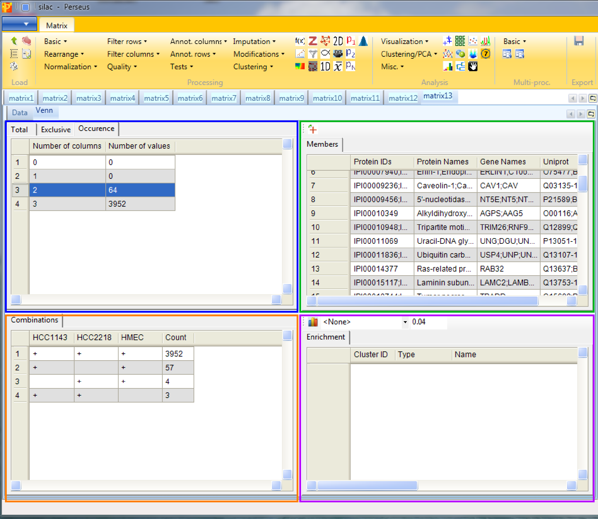
12 ANOVA
To find out which proteins are differentially regulated between the cell lines go back to the matrix before “averaging within groups” and apply Processing → Tests → Multiple-samples tests. We select “Multiple-samples tests” because there are more than two cell line groups to compare. In case you wanted to compare only one or two samples you would use the respective t-test.

An important parameter in the parameter panel is “Use for truncation”. Here you can choose whether the truncation should be based on the p-values, if the Benjamini Hochberg correction for multiple hypothesis testing should be applied, or if a permutation-based FDR is calculated. As an example, if you select “Permutation-based FDR” and use 0.01 as a threshold value it would mean that there are 1% false positives among the proteins that the ANOVA test finds as significantly regulated.

The output table of ANOVA contains all proteins (not just the ones that are significantly changing). Two columns are added, one numerical column containing the -log(p-values) and one categorical column containing indications, if the respective row was significant in the test.

13 Enrichment, Fisher exact test
Now we want to know, if certain pathways or GO terms are over-represented in the proteins that are significantly changing between the cell lines. For this we can use the Fisher exact test in Processing → Annot.columns → Fisher exact test.

It will test the terms in one column, in our case the column indicating ANOVA significance, if they correlate with terms from other categorical columns (e.g. KEGG pathways).

Results will depend both on the stringency in the ANOVA as well as the stringency of the Fisher exact test. The output matrix contains all the significant categories with their number of hits, enrichment factors, p-values, corrected p-values, etc. It might be interesting to try different combinations of these. You can also apply the Fisher exact test immediately on the numerical column containing the -log(p-value).

14 Hierarchical clustering
First go to the matrix before averaging groups. Then as a preparation for the hierarchical clustering we first normalize the rows of the matrix. Use Processing → Normalization → Z-score.

to perform Z-scoring of each row. This will shift the mean of each row to 0 and bring the standard deviation to 1.

Now perform hierarchical clustering of rows and columns using Analysis → Clustering/PCA → Hierarchical clustering.

You can use the default parameters. The results will be displayed in an extra tab on the same matrix containing the hierarchical clustering functionalities.
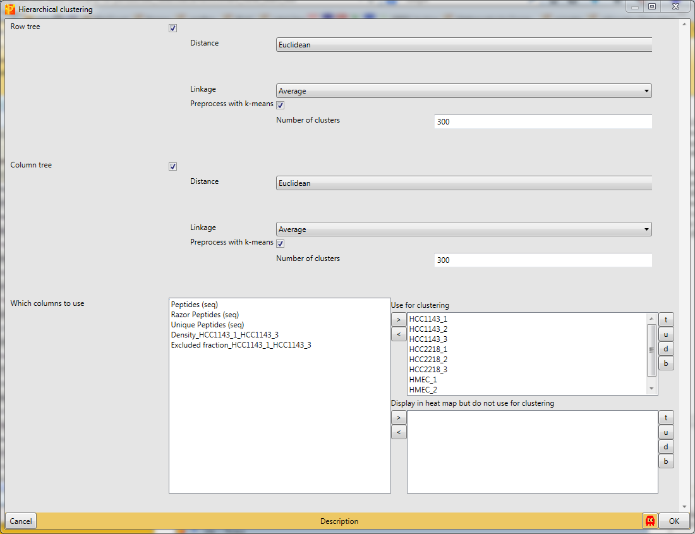
{{ perseus:user:use_cases:silac-18-hierarchical_clustering-parameter_window.png?d irect |}}
Considering the column tree, the replicates of each cell line cluster nicely together. HCC1143 is more similar to HMEC than to HCC2218.

Considering the row tree, we have to zoom in by holding the left mouse key and dragging, to find a cluster of interest. To select a cluster click on the root of a sub tree and information about this cluster will be displayed in the windows next to the heatmap. The top right window contains the size of the cluster (blue rectangle). The window in the middle contains the profiles of the proteins within the cluster (green rectangle). And the window at the lower right enables enrichment analysis of the cluster by clicking on the button in the upper left corner of that window (orange rectangle). Explore the display options and the icon bar on top of the cluster heat map.

15 Principal component analysis
In order to perform principal component analysis (PCA), all cells of the matrix have to contain valid values. One way to achieve this is to perform imputation, here we choose another method. We filter for valid values using Processing → Filter rows → Filter rows based on valid values such that every row contains nine valid values. Go to the data matrix before Z-scoring and perform this valid value filtering.


Then perform PCA with Analysis → Clustering/PCA → Principal component analysis and explore the results. The results will be displayed in an extra tab on the same matrix containing the principal component functionalities.


The result contains the visual output of the PCA, which shows that the three cell lines are perfectly separated (upper left window - blue rectangle). The replicates of each cell line built a cluster. Color, size and shape of initially defined groups (“Categories” tab) or all data points (“Points” tab) can be manipulated in the upper right window (green rectangle). To figure out, which are the proteins that drive the separation of the cell lines, we have to look more closely into the plot in the lower left window (orange rectangle). First select the proteins/data points of interest and have a look at the “Point” tab of the lower right window (purple rectangle). Since we ticked the enrichment checkbox when applying the PCA, we can find the enrichment results in the “Categories” tab of the lower right window.